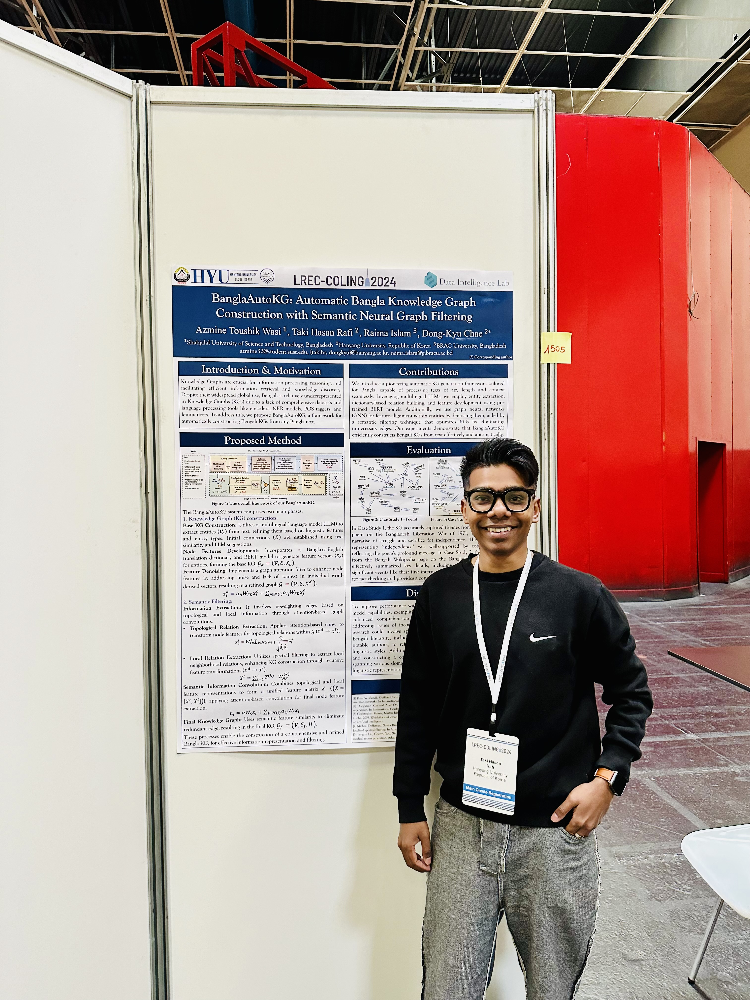

Taki Hasan Rafi
{kind=link}

Ph.D. Candidate
Bio
I am a Ph.D. candidate in the Data Intelligence Lab at Hanyang University, working with Prof. Dong-Kyu Chae. Before joining HYU in 2022, I received a bachelor's degree in Electrical Engineering from AUST in 2021. My Ph.D. is supported by Brain Korea 21 (NRF)! I occasionally collaborate with researchers from Oracle Inc. and TD Securities.
Research Interests
My research interests lie in three directions at the intersection of vision and language AI.
- Data-Efficient Learning: Specifically addressing the challenges of domain generalization and test-time adaptation. In a world where models are often deployed in unseen environments, the ability to perform well with limited or no access to target domain data is crucial. My work explores methods to build robust models that can generalize effectively to new, potentially very different, domains (domain generalization). Furthermore, I investigate techniques for test-time adaptation, allowing models to dynamically adjust to the characteristics of the incoming data stream at inference time, thereby maximizing model performance in real-world scenarios. Another scope of my research is to identify robust data for model training that can affect inference. Ultimately, I aim to develop algorithms that are both accurate and adaptable, enabling reliable and efficient machine-learning solutions across diverse and evolving data distributions.
- Safety and Reliability of AI: LLMs and VLMs are increasingly used in everyday life, it's important they are dependable and do not cause harm. My work involves benchmarking these AI systems to see how well they handle tricky situations and unexpected data. I focus on areas to improve the robustness of the model if they treat everyone fairly (bias), and if they make up false information (hallucination). By finding and fixing these problems, I aim to help build safer, more trustworthy AI that benefits everyone.
- Downstream NLP:
Recent News
Serving as a Reviewer at ACL ARR (ACL 2025 & EMNLP 2025)!
One paper gets accepted at NAACL 2025!
Three papers get accepted at DASFAA 2025!
One paper gets accepted at WWW 2025!
Selected Recent Papers
[DASFAA 2025]
Instance-Aware Test-Time Adaptation for Domain Generalization [PDF][Code]
Taki Hasan Rafi, Serbeter Karlo, Amit Agarwal, Hitesh Patel, Bhargava Kumar, and Dong-Kyu Chae
30th International Conference on Database Systems for Advanced Applications, 2025
(Acceptance rate ≈ 32%)
[ACCV 2024]
GReFEL: Geometry-Aware Reliable Facial Expression Learning under Bias and Imbalanced Data Distribution
Azmine Toushik Wasi*, Taki Hasan Rafi*, Serbeter Karlo, Raima Islam, and Dong-Kyu Chae (*=Equal contributions)
17th Asian Conference on Computer Vision, 2024
(Acceptance rate ≈ 32%)
[NAACL 2025]
SweEval: Do LLMs Really Swear? A Safety Benchmark for Testing Limits for Enterprise Use
Hitesh Laxmichand Patel, Amit Agarwal, Arion Das, Bhargava Kumar, Srikant Panda, Priyaranjan Pattnayak, Taki Hasan Rafi, Tejaswini Kumar, Dong-Kyu Chae
Annual Conference of the North American Chapter of the Association for Computational Linguistics (Industry Track), 2025